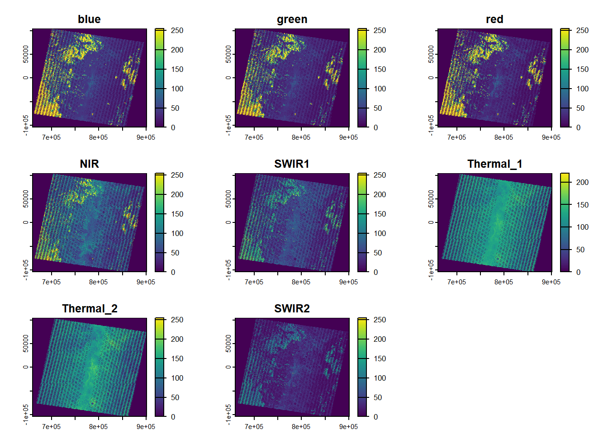
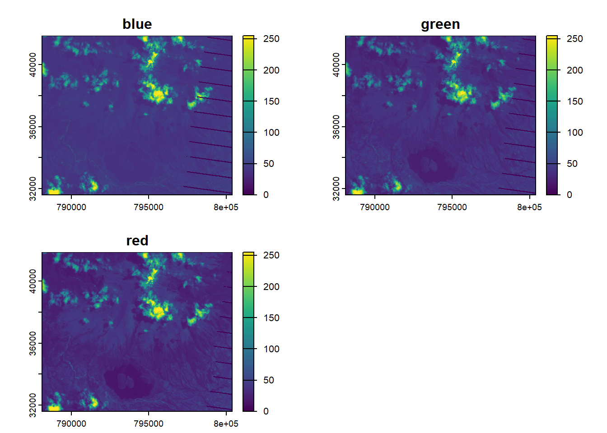
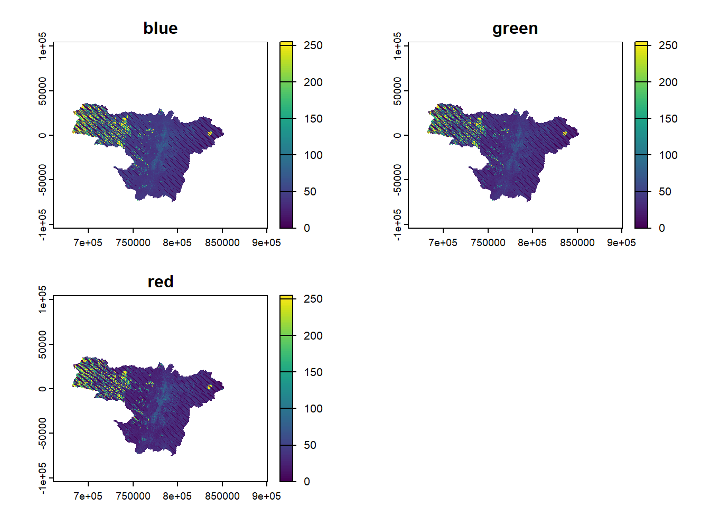
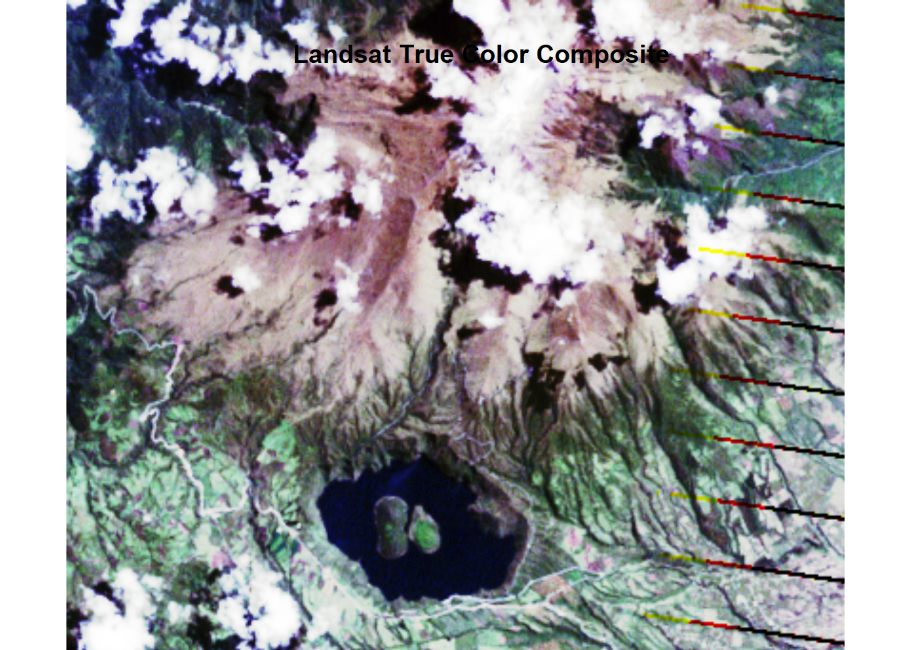
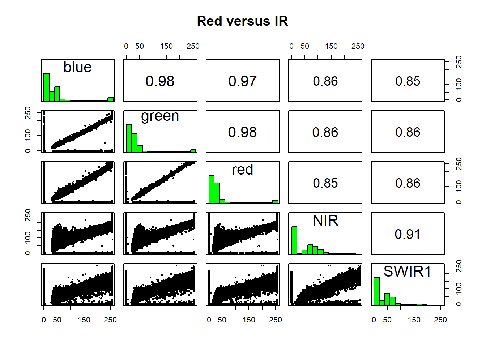

Code
library(raster)
library(terra)
library(sp)
library(sf)
library(devtools)
library(dplyr)
library(RStoolbox)Elaborado: Rubén Basantes
This cell load libraries needed for satellite image processing.
library(raster)
library(terra)
library(sp)
library(sf)
library(devtools)
library(dplyr)
library(RStoolbox)Import and print meta-data and bands based on MTL file for extract information.
print() function shows the information of the image.
RStoolbox::stackMeta() function read Landsat data and build a properly calibrated rasterstack from the bands.
names() function give name to the layers or bands Answer the following questions:
1. What was the date and time when the Landsat scene was acquired?
2. What is the purpose of temporal resolution in this type of satelite image?
3. Explain the results of names() function
metaData <- RStoolbox::readMeta("D:/Landsat_GIS&SR/010060_2013/LE70100602013116EDC00_MTL.txt")
print(metaData)$METADATA_FILE
[1] "D:/Landsat_GIS&SR/010060_2013/LE70100602013116EDC00_MTL.txt"
$METADATA_FORMAT
[1] "MTL"
$SATELLITE
[1] "LANDSAT7"
$SENSOR
[1] "ETM"
$SCENE_ID
[1] "LE70100602013116EDC00"
$COLLECTION
collection tier
NA NA
$ACQUISITION_DATE
[1] "2013-04-26 15:22:12 GMT"
$PROCESSING_DATE
[1] "2014-12-09 GMT"
$PATH_ROW
path row
10 60
$PROJECTION
Coordinate Reference System:
User input: +proj=utm +zone=17 +units=m +datum=WGS84 +ellips=WGS84
wkt:
PROJCRS["unknown",
BASEGEOGCRS["unknown",
DATUM["World Geodetic System 1984",
ELLIPSOID["WGS 84",6378137,298.257223563,
LENGTHUNIT["metre",1]],
ID["EPSG",6326]],
PRIMEM["Greenwich",0,
ANGLEUNIT["degree",0.0174532925199433],
ID["EPSG",8901]]],
CONVERSION["UTM zone 17N",
METHOD["Transverse Mercator",
ID["EPSG",9807]],
PARAMETER["Latitude of natural origin",0,
ANGLEUNIT["degree",0.0174532925199433],
ID["EPSG",8801]],
PARAMETER["Longitude of natural origin",-81,
ANGLEUNIT["degree",0.0174532925199433],
ID["EPSG",8802]],
PARAMETER["Scale factor at natural origin",0.9996,
SCALEUNIT["unity",1],
ID["EPSG",8805]],
PARAMETER["False easting",500000,
LENGTHUNIT["metre",1],
ID["EPSG",8806]],
PARAMETER["False northing",0,
LENGTHUNIT["metre",1],
ID["EPSG",8807]],
ID["EPSG",16017]],
CS[Cartesian,2],
AXIS["(E)",east,
ORDER[1],
LENGTHUNIT["metre",1,
ID["EPSG",9001]]],
AXIS["(N)",north,
ORDER[2],
LENGTHUNIT["metre",1,
ID["EPSG",9001]]]]
$SOLAR_PARAMETERS
azimuth elevation distance
62.045642 59.636155 1.006109
$DATA
FILES BANDS QUANTITY CATEGORY
B1_dn LE70100602013116EDC00_B1.TIF B1_dn dn image
B2_dn LE70100602013116EDC00_B2.TIF B2_dn dn image
B3_dn LE70100602013116EDC00_B3.TIF B3_dn dn image
B4_dn LE70100602013116EDC00_B4.TIF B4_dn dn image
B5_dn LE70100602013116EDC00_B5.TIF B5_dn dn image
B6_VCID_1_dn LE70100602013116EDC00_B6_VCID_1.TIF B6_VCID_1_dn dn image
B6_VCID_2_dn LE70100602013116EDC00_B6_VCID_2.TIF B6_VCID_2_dn dn image
B7_dn LE70100602013116EDC00_B7.TIF B7_dn dn image
B8_dn LE70100602013116EDC00_B8.TIF B8_dn dn pan
NA_VALUE SATURATE_VALUE SCALE_FACTOR DATA_TYPE SPATIAL_RESOLUTION
B1_dn NA NA 1 NA 30
B2_dn NA NA 1 NA 30
B3_dn NA NA 1 NA 30
B4_dn NA NA 1 NA 30
B5_dn NA NA 1 NA 30
B6_VCID_1_dn NA NA 1 NA 30
B6_VCID_2_dn NA NA 1 NA 30
B7_dn NA NA 1 NA 30
B8_dn NA NA 1 NA 15
RADIOMETRIC_RESOLUTION
B1_dn 8
B2_dn 8
B3_dn 8
B4_dn 8
B5_dn 8
B6_VCID_1_dn 8
B6_VCID_2_dn 8
B7_dn 8
B8_dn 8
$CALRAD
offset gain
B1_dn -7.38071 1.181
B2_dn -7.60984 1.210
B3_dn -5.94252 0.943
B4_dn -6.06929 0.969
B5_dn -1.19122 0.191
B6_VCID_1_dn -0.06709 0.067
B6_VCID_2_dn 3.16280 0.037
B7_dn -0.41650 0.066
B8_dn -5.67559 0.976
$CALREF
[1] NA
$CALBT
K1 K2
B6_VCID_1_dn 666.09 1282.71
B6_VCID_2_dn 666.09 1282.71
attr(,"class")
[1] "ImageMetaData" "RStoolbox" # Stacking refers to join the bands for make a single multilayer file.
ls <- RStoolbox::stackMeta(metaData)
lsclass : SpatRaster
size : 6961, 8011, 8 (nrow, ncol, nlyr)
resolution : 30, 30 (x, y)
extent : 660585, 900915, -104115, 104715 (xmin, xmax, ymin, ymax)
coord. ref. : WGS 84 / UTM zone 17N (EPSG:32617)
sources : LE70100602013116EDC00_B1.TIF
LE70100602013116EDC00_B2.TIF
LE70100602013116EDC00_B3.TIF
... and 5 more sources
names : B1_dn, B2_dn, B3_dn, B4_dn, B5_dn, B6_VCID_1_dn, ...
min values : 0, ? , 0, ? , ? , ? , ...
max values : 255, ? , 255, ? , ? , ? , ... # information of bands
# gives names to bands
names(ls) <- c('blue', 'green', 'red', 'NIR', 'SWIR1', 'Thermal_1', 'Thermal_2', 'SWIR2')
lsclass : SpatRaster
size : 6961, 8011, 8 (nrow, ncol, nlyr)
resolution : 30, 30 (x, y)
extent : 660585, 900915, -104115, 104715 (xmin, xmax, ymin, ymax)
coord. ref. : WGS 84 / UTM zone 17N (EPSG:32617)
sources : LE70100602013116EDC00_B1.TIF
LE70100602013116EDC00_B2.TIF
LE70100602013116EDC00_B3.TIF
... and 5 more sources
names : blue, green, red, NIR, SWIR1, Thermal_1, ...
min values : 0, ? , 0, ? , ? , ? , ...
max values : 255, ? , 255, ? , ? , ? , ... # provide internal information of the bands
nlyr(ls)[1] 8crs(ls)[1] "PROJCRS[\"WGS 84 / UTM zone 17N\",\n BASEGEOGCRS[\"WGS 84\",\n ENSEMBLE[\"World Geodetic System 1984 ensemble\",\n MEMBER[\"World Geodetic System 1984 (Transit)\"],\n MEMBER[\"World Geodetic System 1984 (G730)\"],\n MEMBER[\"World Geodetic System 1984 (G873)\"],\n MEMBER[\"World Geodetic System 1984 (G1150)\"],\n MEMBER[\"World Geodetic System 1984 (G1674)\"],\n MEMBER[\"World Geodetic System 1984 (G1762)\"],\n MEMBER[\"World Geodetic System 1984 (G2139)\"],\n MEMBER[\"World Geodetic System 1984 (G2296)\"],\n ELLIPSOID[\"WGS 84\",6378137,298.257223563,\n LENGTHUNIT[\"metre\",1]],\n ENSEMBLEACCURACY[2.0]],\n PRIMEM[\"Greenwich\",0,\n ANGLEUNIT[\"degree\",0.0174532925199433]],\n ID[\"EPSG\",4326]],\n CONVERSION[\"UTM zone 17N\",\n METHOD[\"Transverse Mercator\",\n ID[\"EPSG\",9807]],\n PARAMETER[\"Latitude of natural origin\",0,\n ANGLEUNIT[\"degree\",0.0174532925199433],\n ID[\"EPSG\",8801]],\n PARAMETER[\"Longitude of natural origin\",-81,\n ANGLEUNIT[\"degree\",0.0174532925199433],\n ID[\"EPSG\",8802]],\n PARAMETER[\"Scale factor at natural origin\",0.9996,\n SCALEUNIT[\"unity\",1],\n ID[\"EPSG\",8805]],\n PARAMETER[\"False easting\",500000,\n LENGTHUNIT[\"metre\",1],\n ID[\"EPSG\",8806]],\n PARAMETER[\"False northing\",0,\n LENGTHUNIT[\"metre\",1],\n ID[\"EPSG\",8807]]],\n CS[Cartesian,2],\n AXIS[\"(E)\",east,\n ORDER[1],\n LENGTHUNIT[\"metre\",1]],\n AXIS[\"(N)\",north,\n ORDER[2],\n LENGTHUNIT[\"metre\",1]],\n USAGE[\n SCOPE[\"Navigation and medium accuracy spatial referencing.\"],\n AREA[\"Between 84°W and 78°W, northern hemisphere between equator and 84°N, onshore and offshore. Bahamas. Ecuador - north of equator. Canada - Nunavut; Ontario; Quebec. Cayman Islands. Colombia. Costa Rica. Cuba. Jamaica. Nicaragua. Panama. United States (USA).\"],\n BBOX[0,-84,84,-78]],\n ID[\"EPSG\",32617]]"ncell(ls)[1] 55764571dim(ls)[1] 6961 8011 8res(ls)[1] 30 30# plots the satelite images
plot(ls)
Import a single RasterLayer objects from Landsat bands: b1=bleu and b2=red.
4. Identify and print the information for NIR and SWIR bands.
5. What is the spaial resolution of those images?
b1 <- raster::raster('D:/Landsat_GIS&SR/010060_2013/LE70100602013116EDC00_B1.TIF')
b2 <- raster::raster('D:/Landsat_GIS&SR/010060_2013/LE70100602013116EDC00_B2.TIF')Above we created a RasterStack with ‘n’ layers.
The layers represent DN in 8bits of radiometric resolution.
The reflection intensity can be computed by an at-surface reflexion algorithm, this going to be shows in the next session.
6. What is the purpose of radiometric resolution in this type of satelite image?
# You can plot individual layers of a RasterStack of a multi-spectral image.
par(mfrow = c(1,2))
plot(b1, main = "Blue", col = gray(0:100 / 100))
plot(b2, main = "Green", col = gray(0:100 / 100))
Have a look at the legends of the maps created above. They can range between 0 and 255. Notice the difference in shading and range of legends between the different bands. This is because different surface features reflect the incident solar radiation differently. Each layer represent how much incident solar radiation is reflected for a particular wavelength range. For example, vegetation reflects more energy in NIR than other wavelengths and thus appears brighter. In contrast, water absorbs most of the energy in the NIR wavelength and it appears dark.
We do not gain that much information from these grey-scale plots; they are often combined into a composite to create more interesting plots.
To make a true (or natural) color image, that is, something that looks like a normal photograph (vegetation in green,water blue etc), we need bands in the red, green and blue regions.
The plotRGB method can be used to combine them into a single composite. You can also supply additional arguments to plotRGB to improve the visualization (e.g. a linear stretch of the values, using strecth = “lin”).
# Cargar bandas
b1 <- raster('D:/Landsat_GIS&SR/010060_2013/LE70100602013116EDC00_B1.TIF')
b2 <- raster('D:/Landsat_GIS&SR/010060_2013/LE70100602013116EDC00_B2.TIF')
b3 <- raster('D:/Landsat_GIS&SR/010060_2013/LE70100602013116EDC00_B3.TIF')
# Crear stack RGB (R=rojo, G=verde, B=azul)
landsatRGB <- stack(b3, b2, b1)
# Mostrar como color verdadero
plotRGB(landsatRGB, axes = TRUE, stretch = "hist",
main = "Landsat True Color Composite")
7. Now, using landsatRGB create false color composite map by using band 4 (NIR), 3 (green), and 2 (blue) can be used.
# load bands
# Create stack RGB
# Mostrar como falso color verdaderosubset() function select only certain bands from the multi-band raster object ls.
ls_sub <- subset(ls, 1:3) # 1:7
ls_subclass : SpatRaster
size : 6961, 8011, 3 (nrow, ncol, nlyr)
resolution : 30, 30 (x, y)
extent : 660585, 900915, -104115, 104715 (xmin, xmax, ymin, ymax)
coord. ref. : WGS 84 / UTM zone 17N (EPSG:32617)
sources : LE70100602013116EDC00_B1.TIF
LE70100602013116EDC00_B2.TIF
LE70100602013116EDC00_B3.TIF
names : blue, green, red
min values : 0, ? , 0
max values : 255, ? , 255 ext() function provides the coordinated of the spatial domain of the image.
8. In this activity, we will reduce the area of our satellite image by selecting only a specific region of interest.
To do this, we will use coordinates extracted from Google Earth and apply them to define the geographic boundaries of the crop. Write down the minimum and maximum of the new coordinates (left, right, bottom, and top limits) of the area. Finally, use the resulting extent to crop your full image.
ext(ls_sub)SpatExtent : 660585, 900915, -104115, 104715 (xmin, xmax, ymin, ymax)# The extension is obtained by Google Earth
e <- extent(788107, 800382, 31599, 41875)
# crop landsat by the extent
ls_sub_crop<- crop(ls_sub, e)
plot(ls_sub_crop)
Instead of cropping the image using numeric coordinates, in this method we use a vector shapefile that represents the area of interest (AOI). This shapefile typically comes from GIS software (like QGIS, ArcGIS, or Google Earth exports). For doing so, we will use the Area of Interest (AOI) of Pichincha.
9. In your own words, explain the purpose of the crs() function in this specific example. Describe why we check the coordinate reference system (CRS) of both the raster and the vector layer before cropping.
Then, add your explanation as comments inside the code, with proper indentation and clear wording.
aoi <- vect("D:/Landsat_GIS&SR/data/AOI_Pichincha.shp") # Check the projection of the vector
crs(aoi)[1] "PROJCRS[\"WGS 84 / UTM zone 17S\",\n BASEGEOGCRS[\"WGS 84\",\n DATUM[\"World Geodetic System 1984\",\n ELLIPSOID[\"WGS 84\",6378137,298.257223563,\n LENGTHUNIT[\"metre\",1]]],\n PRIMEM[\"Greenwich\",0,\n ANGLEUNIT[\"degree\",0.0174532925199433]],\n ID[\"EPSG\",4326]],\n CONVERSION[\"UTM zone 17S\",\n METHOD[\"Transverse Mercator\",\n ID[\"EPSG\",9807]],\n PARAMETER[\"Latitude of natural origin\",0,\n ANGLEUNIT[\"Degree\",0.0174532925199433],\n ID[\"EPSG\",8801]],\n PARAMETER[\"Longitude of natural origin\",-81,\n ANGLEUNIT[\"Degree\",0.0174532925199433],\n ID[\"EPSG\",8802]],\n PARAMETER[\"Scale factor at natural origin\",0.9996,\n SCALEUNIT[\"unity\",1],\n ID[\"EPSG\",8805]],\n PARAMETER[\"False easting\",500000,\n LENGTHUNIT[\"metre\",1],\n ID[\"EPSG\",8806]],\n PARAMETER[\"False northing\",10000000,\n LENGTHUNIT[\"metre\",1],\n ID[\"EPSG\",8807]]],\n CS[Cartesian,2],\n AXIS[\"(E)\",east,\n ORDER[1],\n LENGTHUNIT[\"metre\",1]],\n AXIS[\"(N)\",north,\n ORDER[2],\n LENGTHUNIT[\"metre\",1]],\n ID[\"EPSG\",32717]]"crs(ls_sub)[1] "PROJCRS[\"WGS 84 / UTM zone 17N\",\n BASEGEOGCRS[\"WGS 84\",\n ENSEMBLE[\"World Geodetic System 1984 ensemble\",\n MEMBER[\"World Geodetic System 1984 (Transit)\"],\n MEMBER[\"World Geodetic System 1984 (G730)\"],\n MEMBER[\"World Geodetic System 1984 (G873)\"],\n MEMBER[\"World Geodetic System 1984 (G1150)\"],\n MEMBER[\"World Geodetic System 1984 (G1674)\"],\n MEMBER[\"World Geodetic System 1984 (G1762)\"],\n MEMBER[\"World Geodetic System 1984 (G2139)\"],\n MEMBER[\"World Geodetic System 1984 (G2296)\"],\n ELLIPSOID[\"WGS 84\",6378137,298.257223563,\n LENGTHUNIT[\"metre\",1]],\n ENSEMBLEACCURACY[2.0]],\n PRIMEM[\"Greenwich\",0,\n ANGLEUNIT[\"degree\",0.0174532925199433]],\n ID[\"EPSG\",4326]],\n CONVERSION[\"UTM zone 17N\",\n METHOD[\"Transverse Mercator\",\n ID[\"EPSG\",9807]],\n PARAMETER[\"Latitude of natural origin\",0,\n ANGLEUNIT[\"degree\",0.0174532925199433],\n ID[\"EPSG\",8801]],\n PARAMETER[\"Longitude of natural origin\",-81,\n ANGLEUNIT[\"degree\",0.0174532925199433],\n ID[\"EPSG\",8802]],\n PARAMETER[\"Scale factor at natural origin\",0.9996,\n SCALEUNIT[\"unity\",1],\n ID[\"EPSG\",8805]],\n PARAMETER[\"False easting\",500000,\n LENGTHUNIT[\"metre\",1],\n ID[\"EPSG\",8806]],\n PARAMETER[\"False northing\",0,\n LENGTHUNIT[\"metre\",1],\n ID[\"EPSG\",8807]]],\n CS[Cartesian,2],\n AXIS[\"(E)\",east,\n ORDER[1],\n LENGTHUNIT[\"metre\",1]],\n AXIS[\"(N)\",north,\n ORDER[2],\n LENGTHUNIT[\"metre\",1]],\n USAGE[\n SCOPE[\"Navigation and medium accuracy spatial referencing.\"],\n AREA[\"Between 84°W and 78°W, northern hemisphere between equator and 84°N, onshore and offshore. Bahamas. Ecuador - north of equator. Canada - Nunavut; Ontario; Quebec. Cayman Islands. Colombia. Costa Rica. Cuba. Jamaica. Nicaragua. Panama. United States (USA).\"],\n BBOX[0,-84,84,-78]],\n ID[\"EPSG\",32617]]"aoi <- project(aoi, crs(ls_sub))
ls_sub_mask <- mask(ls_sub, aoi)
|---------|---------|---------|---------|
=========================================
|---------|---------|---------|---------|
=========================================
plot(ls_sub_mask)
The cell below combines the three bands (blue, green, red) from ls_sub_crop variable into a single SpatRaster object. Then use the plotRGB() function to display the image in true color map.
The plotRGB() function determines which band will be shown as red, green, and blue in the final image
- For improving the visualization we apply a simple contrast adjustment stretch = “lin”.
- For improving the visualization we also apply the contrast stretch = “hist”*.
# Combine bands as RGB SpatRaster
landsatRGB <- c(ls_sub_crop$blue, ls_sub_crop$green, ls_sub_crop$red)
plotRGB(landsatRGB, r=3, g=2, b=1, stretch="lin")
title("Landsat True Color Composite", font.main = 2)
plotRGB(landsatRGB, r=3, g=2, b=1, stretch="hist")
title("Landsat True Color Composite", font.main = 2)
10. Repeat all the explanaition above but crate a False Color Composite Map.
explain thw differences when using linear improvements and histogram improvements.
Saving results:
writeRaster(ls_sub_mask, filename="D:/Landsat_GIS&SR/010060_2013/output/mask-landsat.tif", overwrite=TRUE)
|---------|---------|---------|---------|
=========================================
The function pairs() creates a scatterplot matrix. This means it compares each selected band against the others to show how strongly their pixel values are related.
Look carefully at the scatterplots produced by these two lines of code. Then answer the following questions:
11. Do the Blue and Green bands show a strong or weak relationship? Explain what this means about surface reflectance in the visible spectrum.
12. In the second scatterplot (Red vs IR bands), identify the cluster of points that likely represents vegetation.
13. Based on the scatterplots, which bands seem most useful for distinguishing different land cover types? Justify your answer using patterns you see in the point clusters.
pairs(ls_sub_crop[[1:2]], main = "blue versus green")
pairs(ls[[1:5]], main = "Red versus IR")
For Landsat7 the following wavelengths exist: Blue, Green, Red, Near Infrared (NIR), Shortwave Infrared (SWIR ) 1, Shortwave Infrared (SWIR) 2, Panchromatic, Cirrus, Thermal Infrared (TIRS) 1, Thermal Infrared (TIRS) 2. We wont use the Thermal layers and you will see how to remove those in following sections.
smpl <- vect("D:/Landsat_GIS&SR/data/Samples_pch.shp")# Check the projection of the vector
# Extract raster value at sample point locations
df <- raster::extract(ls, smpl)
df ID blue green red NIR SWIR1 Thermal_1 Thermal_2 SWIR2
1 1 43 30 24 60 32 123 135 17
2 2 52 44 43 67 74 143 172 53
3 3 42 35 30 77 47 127 142 26
4 4 39 34 35 58 57 129 147 33
5 5 42 41 34 108 69 127 143 35# remove Thermal bands
df <- df %>% select(-Thermal_1&-Thermal_2)
# add the land cover class to the points
df$Clase <- smpl$Clase
# Convert to long format
library(tidyr)
library(ggplot2)
df_long <- df %>%
pivot_longer(cols = c("blue", "green", "red", "NIR", "SWIR1", "SWIR2"),
names_to = "Band",
values_to = "Reflectance")
ggplot(df_long, aes(x = Band, y = Reflectance, color = Clase, group = Clase)) +
stat_summary(fun = mean, geom = "line", linewidth = 1.4) +
stat_summary(fun = mean, geom = "point", size = 3) +
theme_minimal(base_size = 14) +
labs(title = "Mean Spectral Profile per Class",
x = "Spectral Band",
y = "Reflectance")